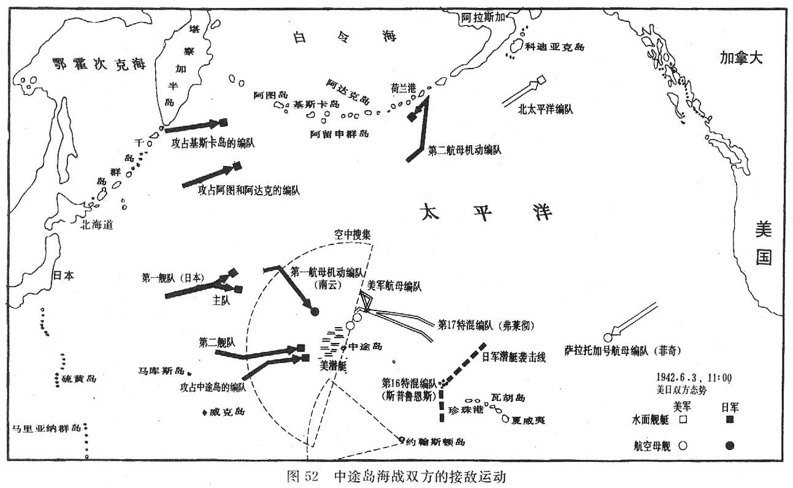

返回主页
三大海战：中途岛决战

1941年
11月17日，袭击珍珠港的联合舰队离开柱岛锚地；26日，集结后的攻击舰队离开单寇湾，取道北太平洋航线向珍珠港进发，太平洋战争序幕掀开。
12月7日，日军在马来半岛北部哥打(BA7A)巴鲁和泰南的北大年（Patani）和宋卡（Singora，现称Songkla）登陆。
12月8日，日本偷袭珍珠港成功并空袭英美在远东的军事设施。
12月9日，日美英相互宣战，步其后尘者有加拿大、澳洲、新西兰等廿余个国家，太平洋战争正式爆发。
12月10日，英国的“威尔斯亲王”号和“反击”号被日本海军航空兵击沉。
12月25日，日军占领香港，暴行持续了整整三天。
1942年
1942年2月15日，新加坡英军司令帕西瓦尔签订投降书，新加坡弃守。
1942年3月9日，印尼群岛荷军投降。
1942年3月11日，麦克阿瑟离菲赴澳就任联军统帅。
1942年4月18日，美国使用航母编队运载B-25中型轰炸机，首次轰炸东京。
1942年5月6日，菲律宾沦陷。
1942年5月8日，珊瑚海海战结束，美军损失“列克星顿”号航空母舰，但挫败了日军攻占莫尔兹比港的企图。
1942年5月8日，缅北重镇密支那失守，中国远征军全面撤退，缅甸落入日军之手。
1942年6月3至6日，日本进攻中途岛败北，损失四艘主力航母，为太平洋战争转折点。
1943年
1943年2月7日，日军撤离瓜达尔卡纳尔岛，瓜岛败战使太平洋战争攻守之势互换。
1943年4月18日，山本五十六座机遭伏击丧命。
1943年11月22日至26日，中英美三国在开罗会商，并签订《开罗宣言》。
1944年
1944年1月31日，美军进攻马绍尔群岛。
1944年4至11月，日军在华发动“打通大陆交通线战役”。
1944年6月15日，美国开始对日本本土实施战略轰炸。
1944年8月10日，美军完成攻占马里亚纳群岛任务。
1944年10月23至25日， 莱特岛海战日军惨败。
1945年
1945年3月4日，马尼拉光复。
1945年5月3日，中英美联合反攻缅甸胜利。
1945年6月22日，日本失冲绳岛。
1945年7月16日（美国日期），美国成功试炸原子弹。
1945年7月26日，中英美发表《波茨坦公告》。
1945年8月6日，广岛遭受原子弹袭击。
1945年8月8日，苏联对日宣战并出兵中国东北。
1945年8月9日，美国在长崎投掷第二颗原子弹。
1945年8月10日，天皇裕仁裁决终战。
1945年8月15日，日本正式无条件投降。
1945年9月2日，在美舰“密苏里”号上举行日本签降仪式，世界再次恢复和平。
防空识别区
国家安全委员会
太平洋战争
日本偷袭珍珠港路线图
三大海战：偷袭珍珠港
三大海战：珊瑚海海战
version:1.0; jobnet@188.com © retter2012.com